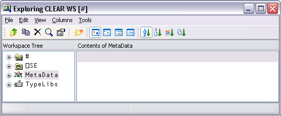
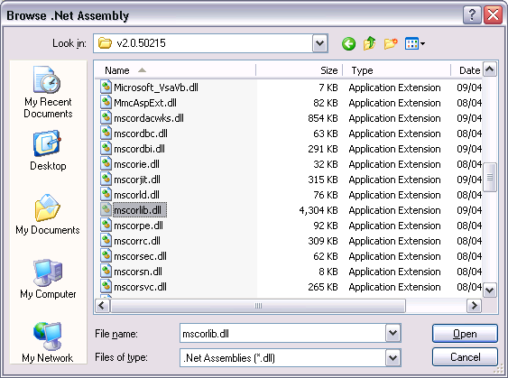
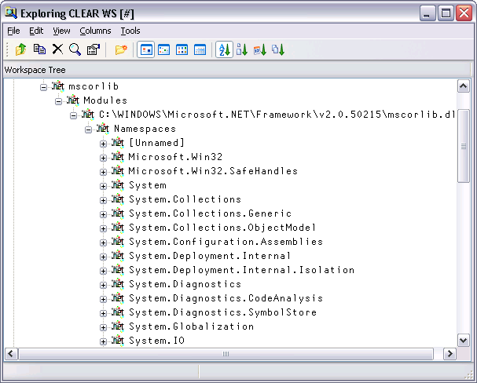
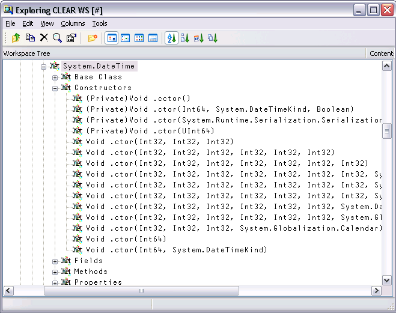
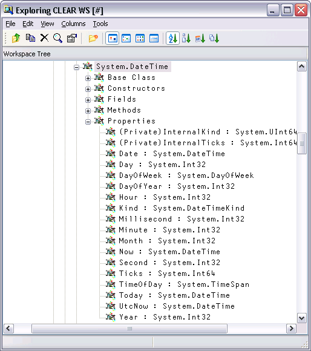
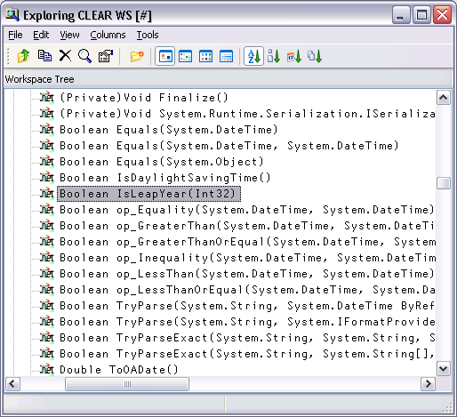
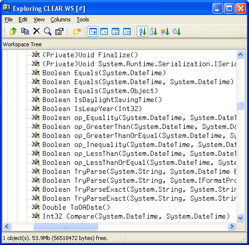

Microsoft supplies a tool for browsing .NET Class libraries called ILDASM.EXE1.
As a convenience, the Dyalog APL Workspace Explorer has been extended to perform a similar task as ILDASM so that you can gain access to the information within the context of the APL environment.
The information that describes .NET classes, which is known as its Metadata, is part of the definition of the class and is stored with it. This Metadata corresponds to Type Information in COM, which is typically stored in a separate Type Library.
To enable the display of Metadata in the Workspace Explorer, you must have the Type Libraries option of the View menu checked.
To gain information about one or more Net Classes, open the Workspace Explorer, right click the Metadata folder, and choose Load.

This brings up the Browse .Net Assembly dialog box as shown below. Navigate to the .NET assembly of your choice, and click Open.

Note that the .NET Classes provided with the .NET Framework are typically located in C:\WINDOWS\Microsoft.NET\Framework\V2.0.50215. The last named folder is the Version number.
The most commonly used classes of the .NET Namespace System are stored in this directory in an Assembly named mscorlib.dll, along with a number of other fundamental .NET Namespaces.
The result of opening this Assembly is illustrated in the following screen shot. The somewhat complex tree structure that is shown in the Workspace Explorer merely reflects the structure of the Metadata itself.

Opening the System/ Classes sub-folder causes the Explorer to display the list of classes contained in the .NET Namespace System as shown in the picture below.
The Constructors folder shows you the list of all of the valid constructors and their parameter sets with which you may create a new instance of the Class by calling New. The constructors are those named .ctor; you may ignore the one named .cctor, (the class constructor) and any labelled as Private.
For example, you can deduce that DateTime.New may be called with three numeric (Int32) parameters, or six numeric (Int32) parameters, and so forth. There are in fact seven different ways that you can create an instance of a DateTime.

For example, the following statement may be used to create a new instance of DateTime (09:30 in the morning on 30th April 2001):
mydt←⎕NEW DateTime (2001 4 30 9 30 0) mydt 30/04/2001 09:30:00
The Properties folder provides a list of the properties supported by the Class. It shows the name of the property followed by its data type. For example, the DayOfYear property is defined to be of type Int32.

You can query a property by direct reference:
mydt.DayOfWeek Monday
Notice too that the data types of some properties are not simple data types, but Classes in their own right. For example, the data type of the Now property is itself System.DateTime. This means that when you reference the Now property, you get back an object that represents an instance of the System.DateTime object:
mydt.Now 07/11/2001 11:30:48 ⎕TS 2001 11 7 11 30 48 0
The Methods folder lists the methods supported by the Class. The Explorer shows the data type of the result of the method, followed by the name of the method and the types of its arguments. For example, the IsLeapYear method takes an Int32 parameter (year) and returns a Boolean result.
mydt.IsLeapYear 2000 1

Many of the reported objects are listed as Private, which means they are inaccessible to users of the class – you are not able to call them or inspect their value. For more information about classes, see the chapter on Object Oriented Programming in the Dyalog APL Language Reference Manual.
